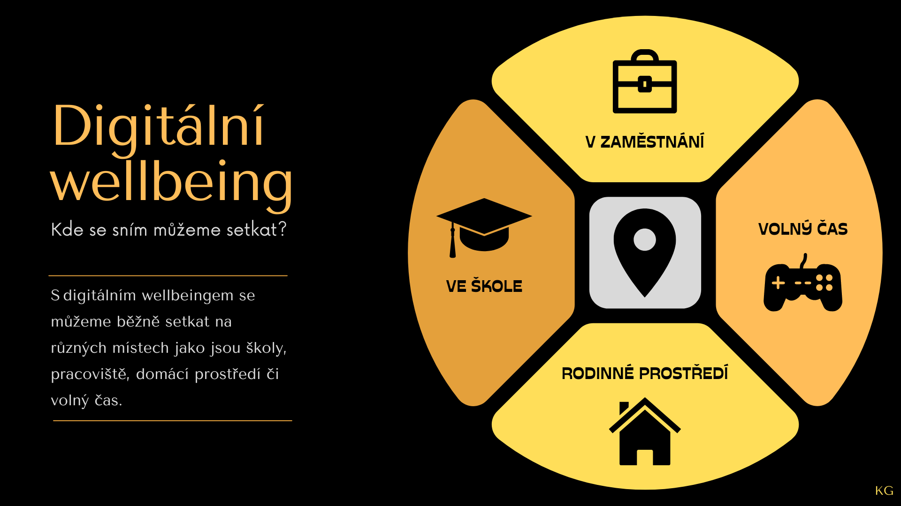

Gawlowská Karolína a Poláček Marcel
Doba studia: 40 minut
Kybernetická bezpečnost je v současné době velmi zmiňované téma a nebude tomu jinak i v budoucnosti, spíše naopak. Informační technologie jsou postupně více nasazovány do všech pracovních odvětví, a to má spousty východ, ale i mnoho nevýhod o kterých je potřeba vědět. Bohužel je kybernetická bezpečnost mnohdy podceňována a často se začíná řešit až v momentě, kdy nastane bezpečnostní incident. To je ale už velmi pozdě. Tento text obsahuje velmi základní informace, jak se chovat v kybernetickém světě bezpečně a nezpůsobit neznalostí incident, díky které by došlo ke kolapsu dané instituce. Hned na začátku je dobré zmínit, že bezpečnost je odvětví, které se rychle mění s daným trendem, je proto nutné se v tomto odvětví vzdělávat průběžně.
Kybernetická bezpečnost může být definována několika různými způsoby, ale všeobecně je možné říct, že jde
o celkovou ochranu sítí před kybernetickými útoky a hrozbami, aby byla zachována bezpečnost informací.
Kyberbezpečnost je stále ještě relativně nový obor, proto je nevyhnutelné reagovat na specifické výzvy.
Česko i Evropská unie se ale snaží přicházet s novými a efektivními řešeními a díky koordinaci a
spolupráci na mezinárodní úrovni dokážeme reflektovat novou realitu v podobě dobře fungujících politik.
Jelikož jde o velice rychle se vyvíjející obor, můžeme očekávat příchod zcela nových a přelomových
technologií, jako například kvantové počítače nebo umělá inteligence, jež podstatně ovlivní používanou
kryptografii i další oblasti. V prosinci 2020 Evropská komise představila Novou strategii kybernetické
bezpečnosti EU, která má zabezpečit globální a otevřený internet tím, že využije a zdokonalí všechny
nástroje a zdroje k zajištění bezpečnosti a k ochraně evropských hodnot a základních práv všech lidí.
Tato strategie obsahuje seznam strategických iniciativ a v současné době se pracuje na několika
důležitých dokumentech. Za zmínku určitě stojí tzv. revize směrnice NIS2 o bezpečnosti
sítí a informačních systémů. Původní směrnice byla vydána v roce 2016, ale vzhledem k dynamickému vývoji
v oblasti digitalizace už není aktuální a nereaguje na nové hrozby. Jedním z jejich cílů je nastavení
jednotné úrovně kybernetické bezpečnosti ve všech členských státech EU. Nová úprava by se měla dotýkat
sektorů, jako je veřejná administrativa, vesmírný výzkum, výroba farmaceutických produktů nebo správa
vodních a odpadních sítí. Novela určí kritické sektory a stanoví minimální úroveň kybernetického
zabezpečení proti útokům.
Další oblastí, která posiluje a vylepšuje koordinace expertů kyberbezpečnosti, která vychází
z doporučení Evropské komise k Společné kybernetické jednotce (JCU, Joint Cyber Unit). Cílem jednotky
bude efektivně využívat zdroje i odborné poznatky, které mají k dispozici jednotlivé členské státy i EU.
Díky společné platformě a know-how bude možné předcházet případným kybernetickým incidentům a krizím,
bojovat proti nim a náležitě na ně reagovat. JCU pomůže propojit aktéry, kteří se věnují oblasti
kyberbezpečnosti z různých sektorů – od občanské společnosti přes diplomatické komunity až po zástupce
soukromého sektoru. Tito odborníci častokrát jednají samostatně, díky JCU budou mít k dispozici
virtuální i fyzickou platformu pro spolupráci: příslušné orgány, instituce a agentury EU společně s
členskými státy tak budou moci postupně vytvořit evropskou platformu pro solidární spolupráci a pomoc v
boji proti kybernetickým útokům velkého rozsahu.
Standardy kybernetické bezpečnosti byly vytvořeny relativně nedávno, neboť teprve v posledních letech přibývá citlivých informací uložených v počítačích, které jsou připojeny k Internetu. Také mnoho úkolů, které byly původně zpracovávány v papírové podobě jsou nyní prováděny na počítačích. Proto se zvyšuje potřeba pro informační věrohodnost a bezpečnost. Důležitým aspektem kybernetické bezpečnosti je ochrana před krádeží identity. Instituce a firmy mají zvýšenou potřebu k zajištění informační (počítačové) bezpečnosti, neboť potřebují chránit své obchodní tajemství, důvěrné informace a osobní údaje o jejich partnerech, zákaznících anebo zaměstnancích. Vláda má rovněž potřebu chránit své informace. Jedním z nejpoužívanější bezpečnostních standardů dneška je ISO / IEC 27002, který vzniknul v roce 1995. Tento standard se skládá ze dvou základních částí: BS 7799 část 1 a BS 7799 část 2, které byly vytvořeny Britským standardizačním institutem (BSI). V poslední době se tento standard přejmenoval na ISO 27001. Národní institut pro standardy a technologie Spojených států Amerických (NIST) vydal několik speciálních publikací řešících informační bezpečnost. Dva z těchto speciálních dokumentů jsou velmi důležité pro kybernetickou bezpečnost: 800-12 s názvem "Příručka Informační bezpečnosti" a 800-14 s názvem "Obecně uznávané zásady a postupy pro zabezpečení informačních technologií".
Velmi důležité je, aby osoby, které jsou součástí nějaké instituce, dbali na základní bezpečnostní pravidla a řídili se jimi. Některé z nich práci stěžují a přidělávají více práce, ale jejich obcházení je velmi nebezpečné a může vést i k vytvoření bezpečnostní hrozby. Níže jsou uvedena základní pravidla, kterými by se měl každý řídit.
I když jsou zařízení a aplikace zajišťující bezpečnost nezbytné (např. antimalwarové programy nebo brány firewall), nestačí je jen tak zapojit a dál nic neřešit. Digitální zabezpečení vyžaduje i zavedení několika dobře promyšlených procesů a návyků. Patří mezi ně:
Na základě informací, v tomto textu, jste nyní schopni rozpoznat základní kyberbezpečností principy a nestát se tak případnou obětí tohoto útoku. Je důležité, v této oblasti procházet pravidelným školením, vzhledem k faktu, že tento obor se mění velmi rychle a je potřeba včas reagovat na nové trendy a doporučení. Samotná znalost zaměstnanců je velmi důležitá pro spolehlivý a bezpečný chod samotné společnosti či instituce. I jednotlivec, je v případě porušení základních principů, schopen závažně poškodit danou společnost a vyřadit ji i velmi dlouhou dobu z provozu, a tak ji způsobit vážné problémy.
Digitální wellbeing (digitální pohoda) je pojem, který se týká zdraví a pohody lidí, kteří jsou často
exponováni digitálním technologiím, jako jsou chytré telefony, počítače, tablety a sociální média.
Digitální wellbeing se zaměřuje na to, jak digitální technologie ovlivňují naše mentální a fyzické
zdraví a jak můžeme využít digitální technologie, tak, aby nám pomáhaly, nikoli škodily.
Problémy, které mohou vyplývat z přílišné expozice digitálním technologiím zahrnují například:
Digitální wellbeing je složitý pojem a zahrnuje mnoho aspektů. Je důležité si uvědomit, že
digitální technologie mohou být pro nás užitečné, ale je důležité je využívat rozumně a v rovnováze
s ostatními aspekty našeho života.
Digitální wellbeing můžeme rozdělit do pěti kategorií.
Nezdravé používání digitálních technologií zahrnuje užívání digitálních zařízení a sociálních médií takovým způsobem, že to má negativní dopad na fyzické, mentální a sociální zdraví. Některé příklady nezdravého používání digitálních technologií zahrnují: Příliš mnoho času stráveného na sociálních médiích nebo hraní online her, což může vést k problémům se spánkem, únavou, sníženou pozorností a koncentrací a zhoršením sociálních vztahů. Příliš mnoho času stráveného na internetu nebo používání digitálních zařízení před spaním, což může ovlivnit kvalitu spánku a vést k problémům se spánkem. Příliš mnoho času stráveného na internetu může také vést k sociální izolaci a snížení kontaktu s lidmi v reálném světě Příliš mnoho času stráveného na internetu může vést k poruchám příjmu potravy nebo k obezitě.
Existuje mnoho zásad pro bezpečné používání digitálních technologií, ale některé z nejdůležitějších z nich jsou: Ochrana soukromí: Snažte se omezit sdílení osobních údajů na internetu a ujistěte se, že vaše soukromí je chráněno na sociálních sítích a jiných online platformách. Používejte silná hesla a aktualizujte je pravidelně. Bezpečnost: Ujistěte se, že vaše zařízení je chráněno proti škodlivému softwaru a že používáte důvěryhodné aplikace a weby. Buďte obezřetní při otevírání e-mailů nebo stahování souborů od neznámých odesílatelů. Zodpovědnost za obsah: Přemýšlejte o tom, co sdílíte na internetu, a ujistěte se, že tento obsah není škodlivý nebo urážlivý.
Empatie a digitální technologie jsou dva pojmy, které se mohou navzájem ovlivňovat. Na jednu stranu digitální technologie mohou být nástrojem pro rozvoj empatie, protože nám umožňují komunikovat s lidmi z různých míst a kultur, a tím rozšiřovat naše pochopení pro různé perspektivy. Například prostřednictvím sociálních médií nebo video hovorů můžeme lépe pochopit, jak se druzí cítí a prožívají situace. Na druhou stranu, přílišná expozice digitálním technologiím může vést k omezení empatie, jelikož se méně setkáváme s lidmi tváří v tvář a méně využíváme nonverbální komunikaci, která je důležitá pro empatii. Navíc se můžeme snadno ponořit do svého vlastního světa, ignorovat druhé a být méně citliví k potřebám druhých. Je tedy důležité, abychom digitální technologie využívali rozumně, s mírou a v kombinaci s osobními kontakty a interakcemi. Je důležité si uvědomit, že i když nám digitální technologie umožňují komunikovat s lidmi z celého světa, nic nenahrazuje osobní kontakt a interakci.
Etika v digitálních technologiích je oblast, která se zabývá morálními aspekty a důsledky používání digitálních technologií. To zahrnuje otázky týkající se soukromí, ochrany osobních údajů, zabezpečení, neutralitou internetu, odpovědností za obsah, algoritmickou spravedlností a mnoha dalšími. Jednou z hlavních otázek etiky digitální technologie je ochrana soukromí a osobních údajů. S rozšiřující se sítí internetu a rostoucím počtem digitálních zařízení se stává stále těžší udržet své osobní údaje v tajnosti. Etické otázky týkající se ochrany soukromí zahrnují například jak jsou shromažďovány, uchovávány a sdíleny osobní údaje a jakým způsobem jsou tyto údaje používány.
Právní vědomí používání digitálních technologií se týká znalosti a porozumění právním předpisům a principům, které se vztahují k používání digitálních technologií. Zahrnuje například znalost práva na soukromí a ochranu osobních údajů, autorského práva, práva na přístup k informacím, regulace internetu a dalších právních otázek, které se týkají digitálních technologií. Důležitá je taky etická perspektiva a jak se vyvarovat porušování jak práva, tak i etických pravidel a doporučeních.
S digitálním wellbeingem se můžeme běžně setkat na internetu v online prostředí:
V zaměstnání bychom si měli uzpůsobit pracovní prostor tak, aby nám vyhovoval. Dále bychom měli používat filtry pro eliminaci modrého světla. Při práci s digitálními technologiemi bychom měli dělat časté přestávky. Například co hodinu se jít projít nebo si zacvičit.
Během volných chvílí si musíme stanovit dobu tzv. mimopracovního odpočinku, kterou bychom neměli přesáhnout. Čas od času se věnovat smysluplným, vzdělávacím a pozitivně rozvíjejícím aktivitám. Např. „Na hodinu si zahraju oblíbenou hru, pak se budu věnovat jiné off-line aktivitě“.
V rodinném prostředí by měl panovat vyvážený rodičovský přístup tzv. rodič by měl sám zdravě a zodpovědně užívat digitální technologie. V rodině by také mělo být vytvořené prostředí důvěry. Dítě se může svěřovat se svými online aktivitami svým rodičům. Rodič by zároveň měl být pro dítě vzorem a komunikovat o zásadách bezpečného chování na internetu. V současné době jsme do značné míry odkázáni na digitální technologie. Ať už v práci, ve škole nebo v našem osobním životě. Každou chvíli se nám na našich zařízeních objeví nová oznámení, na stole při obědě nám zavibruje mobil a práci bez použití počítače už si mnoho z nás ani neumí představit
Digitální wellbeing je v současnosti jednou z nejdůležitějších oblastí při využívání technologií, a to nejen ve vzdělávání. V rámci digitálního wellbeingu jde o to, abychom se nestali otroky svých zařízení. Patnáct tipů, jak aplikovat konkrétní principy wellbeingu s žáky ve výuce i mimo ni.
Odkaz k videu naleznete na adrese:
Těchto patnáct tipů bude rozděleno do pěti kategorií:
1. Nezakazujte žákům používání mobilních telefonů ve výuce, ale změňte způsob jejich užívání.
2. Během výuky používejte více než jedno zařízení (mobilní telefon, tablet, notebook, počítač),
avšak každé na jinou aktivitu.
3. Pokud na škole máte k dispozici více digitálních zařízení (tablety, počítače), tak požívejte tyto
zařízení jako pracovní nástroje (bez veškerých notifikací).
4. Dovolte žákům, aby mohli pracovat na svém zařízení (notebook či tablet), nejen pokud škola nemůže
poskytnout nebo zajistit tyto zařízení ve výuce (1:1, či minimálně 1: skupina).
5. Zvyšte soustředění žáků omezením používání jejich telefonů prostřednictvím osobních i
společenských výzev.
1. Zakažte ve výuce reakční formu chování při používání telefonů, kdy žáci okamžitě odpovídají
(reagují) na všechny zprávy a notifikace, jakmile jim přijdou. Dočasně vypněte nebo zásadně omezte
notifikace správným nastavením režimu Soustředění v OS telefonu.
2. Nastavte minimalistickou formu komunikace mezi žáky, i mezi vámi a žáky. Neposílejte zbytečné
nebo dlouhé zprávy. Snižte frekvenci své komunikace (posílání zpráv, e-mailů apod.). Omezte rychlou
komunikaci (chat) pouze na nejnutnější případy.
3. Omezte počet nástrojů (aplikací) pro organizaci výuky (sdílení prací, odevzdávání úkolů apod.).
1. Povolte žákům sluchátka během samostatné práce, aby mohli poslouchat svou oblíbenou hudbu (tu si
pouští na telefonu, nikoliv na pracovním zařízení – počítači, tabletu). Tato hudba jim pomáhá dostat
se do pohody a některým zlepšuje soustředění na práci. Žáci často používají sluchátka, ať už s
hudbou, nebo bez ní, v režimu aktivního potlačení okolního hluku (ANC), aby nebyli rušeni svým
okolím a mohli se lépe soustředit na práci nebo jen uzavřít do sebe.
2. Postavte před žáky osobní výzvy v podobě aplikací podporujících spánek a fyzickou aktivitu
(SleepTown, Charity Miles).
3. Poraďte žákům, jak používat svůj telefon pro zlepšení svého zdraví (spánku a odpočinku), ukažte
jim, jak tímto způsobem používáte svůj telefon vy, a vyzvěte je, aby některé z těchto způsobů
vyzkoušeli. Zjistěte, jak s těmito režimy pracují oni, a nechte se od nich inspirovat.
1. Zjistěte od žáků, jaké sociální sítě aktuálně nejvíce používají a jakým způsobem je používají a
začněte je používat s nimi, abyste si udělali představu: 1. jak náročné na čas a pozornost žáků
mohou být, 2. zda a jak na nich mohou být žáci závislí (být jimi kontrolováni), 3. jak bezpečné jsou
(z hlediska obsahu i formy sdílení tohoto obsahu).
2. Prozraďte žákům, jak vás technologie, které používáte, ovládají, a zjistěte, jak technologie
ovládají je (a zda si to vůbec uvědomují). Společně hledejte, co udělat pro to, aby nás konkrétní
technologie neovládaly, ale my ovládali je.
3. Uvědomte si, že vaši žáci používají technologie jinak než vy. Když například sedí vedle sebe a
dívají se každý do svého telefonu, neznamená to, že se spolu nebaví, ale že sdílejí své zážitky
současně prezenčně i online a že je to přirozený způsob jejich komunikace.
1. Seznamte se se všemi hlavními principy digitálního minimalismu a snažte se je aplikovat společně se žáky.
Digitální wellbeing je komplexní problematikou zasahující do všech oblastí našeho života s technologiemi. Nemůžeme si proto dovolit jej podcenit a nevěnovat mu pozornost. Pokud je pro nás zdraví prioritou, nesmíme na něj zapomínat ani v souvislosti s používáním technologií. Právě naopak.
V digitální transformaci je třeba školy podporovat a udělat maximum pro to, aby byla jejich digitální infrastruktura funkční a bezpečná. Funkční, aby byli učitelé motivováni využívat digitální technologie ve výuce a rozvíjet digitální gramotnost a informatické myšlení žáků. Bezpečná proto, aby školy uměly čelit hrozbám z vnějšího online světa.
Odkaz na standard: zde
Emocionální wellbeing (duševní pohoda) v digitálním věku se týká způsobu, jakým se lidé vyrovnávají s emocionálními vlivy, které souvisí s používáním digitálních technologií. Tyto technologie mohou mít pozitivní i negativní vlivy na mentální zdraví a duševní pohodu lidí. Emocionální wellbeing je životně důležitý pro naše zdraví a každodenní život. Dětství a dospívání jsou klíčová vývojová období. Pokud jde o vývoj mozku, v těchto fázích života dochází k rychlému dozrávání mnoha mozkových struktur a neurosystémů. To má důsledky pro kognitivní fungování, regulaci emocí, motivaci a sociální interakce (Paus, Keshavan a Giedd, 2008) . Ve skutečnosti je adolescence stále více chápána jako citlivé období vývoje, se zvýšenými vývojovými příležitostmi i riziky, zejména pro duševní onemocnění (Fuhrmann, Knoll a Blakemore, 2015) .
Například téměř každý druhý problém duševního zdraví dospělých začíná ve věku 14 let a 75 % v polovině 20. let (WHO, 2017)
Existuje tedy naléhavá potřeba lépe porozumět vztahu mezi emoční pohodou a digitálními technologiemi.
Z PISA 2015 víme následující (Hooft Graafland, 2018) :
• V průměru 54 % studentů uvedlo, že se cítili špatně, když nebylo dostupné připojení k internetu.
• V evropských zemích sociálně-ekonomicky znevýhodnění studenti častěji uváděli, že se cítí špatně
bez dostupného připojení k internetu, ve srovnání se zvýhodněnými studenty.
Celkově asi 10 až 20 % dětí a dospívajících na světě trpí problémy duševního zdraví a nemocí (Kieling et al., 2011 ; Henderson et al., 2017) a důkazy naznačují, že některé problémy jsou stále více rozšířené mezi mládeží (Choi, 2018).
Pozitivní vlivy mohou být například:
• přístup k informacím a zdrojům
• usnadnění komunikace s lidmi po celém světě
• pomoc při řešení problémů nebo usnadnění nákupů
Negativní vlivy mohou být například:
• návykovost na technologie
• sociální izolace
• ztráta schopnosti komunikovat tváří v tvář
• zvyšování úzkosti nebo deprese
• omezování spánku
• snížení pozornosti a koncentrace
• poruchy příjmu potravy a sociální tlak související se vzhledem
• stres související se školou
• šikana, kyberšikana
• pocit bezvýznamnosti (nedostatku)
Aby se snížil negativní vliv digitálních technologií na mentální zdraví a duševní pohodu,
doporučuje se:
• nastavit si časové limity pro používání technologií
• vyhýbat se používání technologií před spaním
• naučit se regulovat své emoce a myšlenky spojené s technologiemi
• věnovat si čas na kvalitní komunikaci s rodinou a přáteli
• věnovat si čas na fyzickou aktivitu a relaxaci
• poskytnout si podporu, pokud se cítíte zneklidněni nebo ztrácíte kontrolu nad svým používáním
technologií
Kyberšikana je forma šikany, která se odehrává online prostřednictvím internetu nebo mobilních zařízení. Může se projevovat různými způsoby, například posíláním urážlivých zpráv nebo e-mailů, šířením kompromitujících fotografií nebo videí, vytvářením falešných profilů nebo vydáváním se za někoho jiného, aby se šikanovalo nebo diskreditovalo oběť.
Kyberšikana může mít závažné následky pro oběti, jako jsou úzkost, deprese, vysoká úroveň stresu a dokonce i pokusy o sebevraždu. Může také mít negativní vliv na vzdělávání a kariéru oběti.
Prevence kyberšikany zahrnuje:
• učení lidí, jak rozpoznat kyberšikanu a jak na ni reagovat
• učení lidí, jak chránit své soukromí a osobní informace online
• poskytování podpory obětem kyberšikany
• trestání pachatelů kyberšikany
• posilování online etiky a morálky
Je důležité, aby se oběti kyberšikany nebo jejich příbuzní nebo přátelé nebo dokonce i svědci kyberšikany obrátili na odborníky nebo instituce, které se specializují na kyberšikanu, aby získali potřebnou podporu a pomoc.
Kybertest je online vzdělávací hra, kterou připravila Česká bankovní asociace z důvodu velkého množství
útoků na běžné uživatele. Rovněž z důvodu stále nových metod, jak uživatele okrást či poškodit. Jedná se
o interaktivní test, kde se vzděláváme v oblasti kyberbezpečnosti (např. připojení k bezpečné wifi,
zadání bankovní karty atd.…)
Hru naleznete na odkaze: zde
Phishingquiz je online vzdělávací hra, kterou připravil Google z důvodu velkého množství phisingových
útoků. Jedná se o to, aby uživatel rozpoznal, který email může být phisingový. Aby uživatel nevydal své
přihlašovací údaje nebo finanční údaje, tím, že se někdo známý vydává za důvěryhodnou organizaci nebo
webovou stránku. To se obvykle děje prostřednictvím e-mailu nebo zprávy, ve které se žádá uživatele o
zadání svých údajů nebo kliknutí na odkaz, který vede na falešnou webovou stránku
Hru naleznete na odkaze: zde
BuďSafeOnline je neziskový projekt, kde spolupracuje Jirka Král s Avastem. Webová aplikace obsahuje
online kurzy, příručky pro učitele, rodiče a žáky, tipy pro bezpečné chování na internetu a další fígle,
jak se správně chovat na internetu. Projekt je pod záštitou MŠMT.
Hru naleznete na odkaze: zde
Spomocník: 15 tipů, jak na digitální wellbeing se žáky. Metodický portál / Spomocník [online]. Dostupné z: https://spomocnik.rvp.cz/clanek/23027/15-TIPU-JAK-NA-DIGITALNI-WELLBEING-SE-ZAKY.html
Educating 21st Century Children : Emotional Well-being in the Digital Age | [online]. Dostupné z: https://www.oecd-ilibrary.org/sites/b7f33425-en/index.html?itemId=/content/publication/b7f33425-en
Přispěvatelé Wikipedie, Kyberšikana [online], Wikipedie: Otevřená encyklopedie, c2022, Datum poslední revize 8. 12. 2022, 10:22 UTC, [citováno 12. 01. 2023] https://cs.wikipedia.org/w/index.php?title=Kyber%C5%A1ikana&oldid=22192243
Co to je digitální wellbeing? - YouTube. YouTube [online]. Copyright © 2023 Google LLC [cit. 12.01.2023]. Dostupné z: https://www.youtube.com/watch?v=OKzhmcCQSmc
[online]. Dostupné z: https://support.microsoft.com/cs-cz/topic/co-je-to-kybernetick%C3%A1-bezpe%C4%8Dnost-8b6efd59-41ff-4743-87c8-0850a352a390
Kybernetická bezpečnost | Vláda ČR. Úvodní stránka | Vláda ČR [online]. Dostupné z: https://www.vlada.cz/cz/evropske-zalezitosti/umela-inteligence/kyberneticka_bezpecnost/kyberneticka-bezpecnost-192766/
OECD (2018), Children and Young People’s Mental Health in the Digital Age: Shaping the Future, OECD Publishing, www.oecd.org/els/health-systems/Children-and-Young-People-Mental-Health-in-the-Digital-Age.pdf.
Hooft Graafland, J. (2018), “New technologies and 21st century children: Recent trends and outcomes”, OECD Education Working Papers, No. 179, OECD Publishing, Paris, https://dx.doi.org/10.1787/e071a505-en
Fuhrmann, D., L. Knoll and S. Blakemore (2015), “Adolescence as a sensitive period of brain development”, Trends in Cognitive Sciences, Vol. 19/10, pp. 558-566, http://dx.doi.org/10.1016/J.TICS.2015.07.008.
Paus, T., M. Keshavan and J. Giedd (2008), “Why do many psychiatric disorders emerge during adolescence?”, Nature Reviews Neuroscience, Vol. 9/12, pp. 947-957, http://dx.doi.org/10.1038/nrn2513.
WHO (2017), Second-hand Smoke Exposure Data by Region, Global Health Observatory data repository, http://apps.who.int/gho/data/?theme=main&vid=34800.
Choi, A. (2018), “Emotional well-being of children and adolescents: Recent trends and relevant factors”, OECD Education Working Papers, No. 169, OECD Publishing, Paris, https://dx.doi.org/10.1787/41576fb2-en.
Kieling, C. et al. (2011), “Child and adolescent mental health worldwide: Evidence for action”, The Lancet, Vol. 378/9801, pp. 1515-1525, http://dx.doi.org/10.1016/s0140-6736(11)60827-1.
Henderson, J. et al. (2017), “Integrated collaborative care teams to enhance service delivery to youth with mental health and substance use challenges: protocol for a pragmatic randomised controlled trial”, BMJ Open, Vol. 7/2, http://dx.doi.org/10.1136/bmjopen-2016-014080.
Standard konektivity a bezpečnosti škol - edu.cz. edu.cz - Jednotný metodický portál MŠMT [online]. Copyright © 2022 [cit. 14.01.2023]. Dostupné z: https://www.edu.cz/digitalizujeme/standard-konektivity-skol/